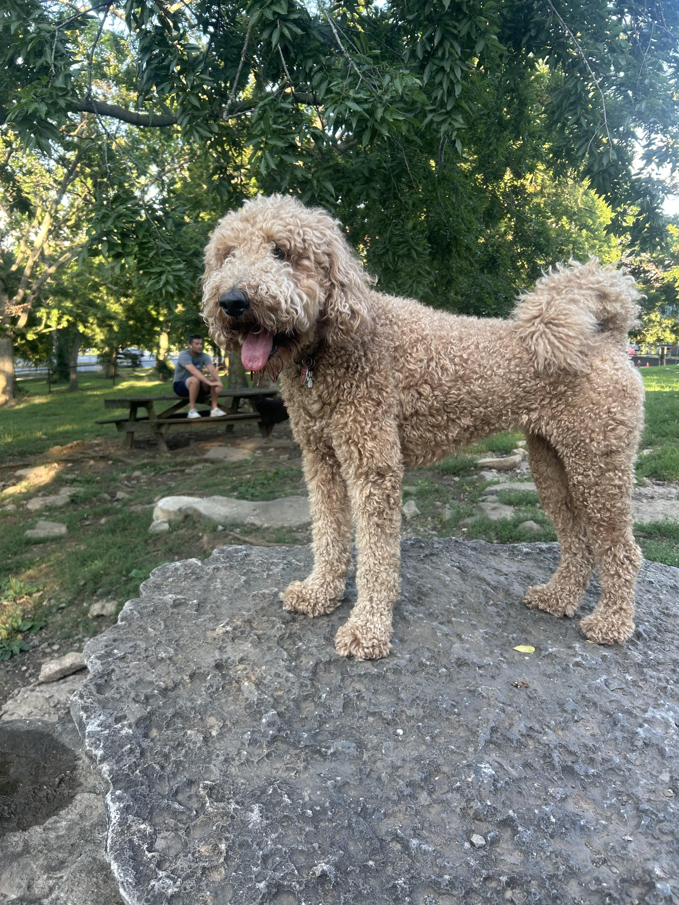

Meet Dolly
Dolly was born on February 20th, 2022 at an Amish puppy mill in Lancaster County, Pennsylvania. After three months living in poor conditions, the mill gave her up to Delaware Valley Golden Retriever Rescue, where I found her and decided to give her a home. She was four months old when I picked her up.
Because of her traumatic past, Dolly has separation anxiety. Her main downfalls are:
- bully sticks
- jumping on counters
- being alone
Despite these issues, Dolly is one of the kindest dogs I have ever been around. Her core characteristics are:
- sensitive
- charismatic
- silly
These are just Dolly's traits. Learn more about Goldendoodles here: What is a Goldendoodle?